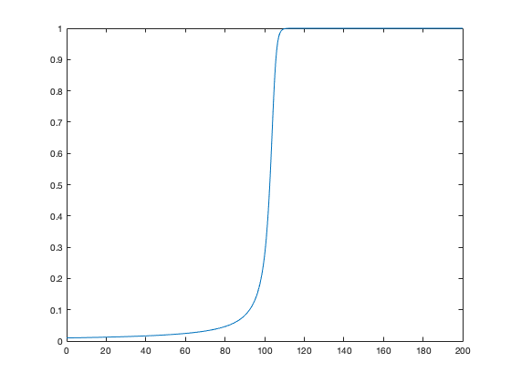
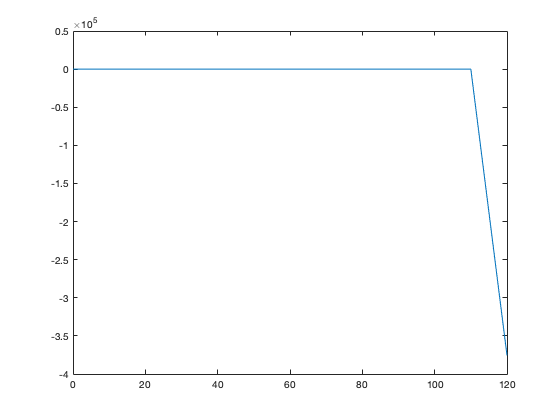
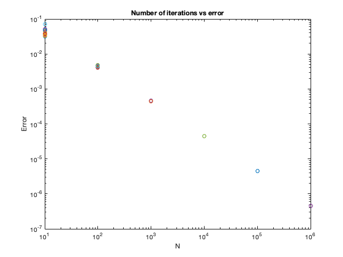

Contents
CS375 HW13
Juan Alejandro Ormaza DEC 7 2021
clear all;clc;close all;
Problem 3
f=@(t,y) y^2 - y^3; [y,t]=RK4(f,0.01,0.1); [y1,t1]=RK4(f,0.01,10); figure(1); plot(t,y) figure(2) plot(t1,y1) fprintf("the plot for h=0.1 works well because h is small enough to not induce any error. \n") fprintf("the plot for h=10 on the other hand has an oscillatory behavior that eventually overshoots \n") fprintf("therefore, the solution with h=0.1 describes the behavior of the flame more precisely \n")
the plot for h=0.1 works well because h is small enough to not induce any error. the plot for h=10 on the other hand has an oscillatory behavior that eventually overshoots therefore, the solution with h=0.1 describes the behavior of the flame more precisely 
4.C
f_x=@(x) sqrt(4-x.^2); % checking that the code works % answer should be close to 1.57 or pi/2 monte_carlo(f_x,0,2,10000)
ans =
1.5738
4.D
N = [10, 100, 1000, 10000, 100000, 1000000]; E=zeros(length(N),10); V2=zeros(length(N),10); error=zeros(length(N),10); for i=1:length(N) for j=1:10 E(i,j)=monte_carlo(f_x,0,2,N(i)); f_v=@(x) (sqrt(4-x.^2)-E(i,j)).^2; V2(i,j)=monte_carlo(f_v,0,2,N(i)); error(i,j) = sqrt(V2(i,j))/N(i); end end for i=1:length(N) loglog(N(i),error(i,:),'o'); hold on end title('Number of iterations vs error'); xlabel('N'); ylabel('Error'); fprintf("the error becomes smaller as N increases (as expected.) Moreover, it is possible to see how \n"); fprintf("as N grows, the error starts to converge and cluster.\n")
the error becomes smaller as N increases (as expected.) Moreover, it is possible to see how as N grows, the error starts to converge and cluster.